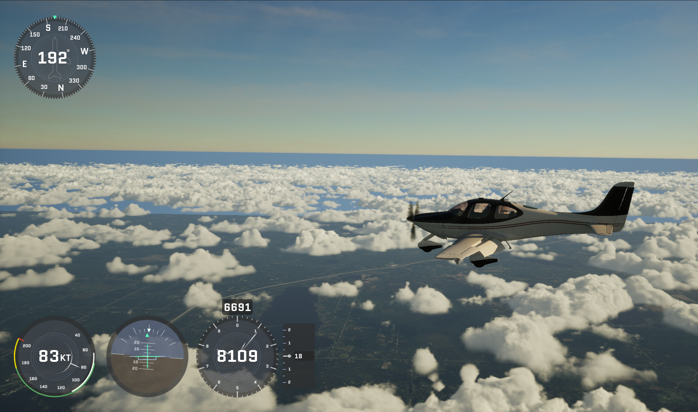

Welcome to MORAI SIM Air Documentation 👍

This document is a User Guide for MORAI SIM: Air alpha version provided to CIRRUS AIRCRAFT
Take a look the MORAI SIM: Air's concept and features.
Start MORAI SIM: Air by reading the introductory tutorial, then check the user guide for more information.
- To checkout MORAI SIM: Air, Go to Introduction
- To start MORAI SIM: Air, Go to Getting Started
- To use MORAI SIM: Air, Go to User Guide